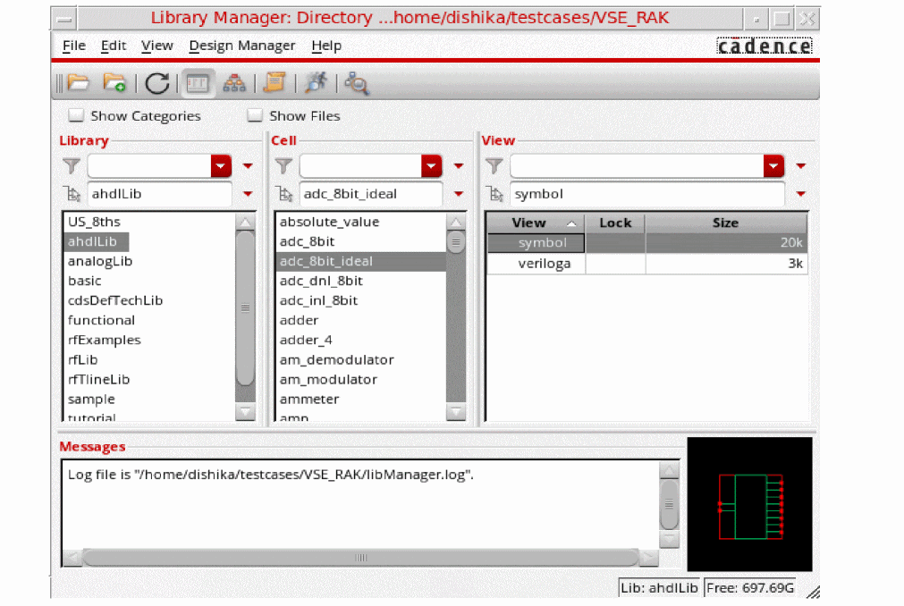

Opening a Cellview
-
In the CIW, choose Tools – Library Manager.
Libraries defined in yourcds.libfile and the default technology library cdsDefTechLib appear on the Library Manager form.
When you open the Library Manager in standalone mode, you cannot open cellviews, so the Open and Open (Read-Only) commands are not selectable. -
In the Library list box, choose a library name.
The cells in the selected library appear in the Cell list box.
To deselect a highlighted library, click the library name. -
Select Show Categories.
The Category list box appears between the Library and Cell list boxes.
The Category list box displays the default categories (Everything and Uncategorized) plus any categories you have added to this library. By default, the Everything category is selected. -
Highlight the category name.
The category name is highlighted. The cells included in that category appear in the Cell list box. Hidden cells do not appear in the list.
To deselect a highlighted category, click the category name. -
Choose a cell name.
The cell name is highlighted. The views associated with the cell appear in the View list box. -
Choose the view name of the cellview you want to open.
The view name is highlighted. -
Choose File – Open or File – Open (Read-Only).
The Library Manager opens the selected cellview.
Related Topics
Hiding Cells and Showing Hidden Cells
Return to top